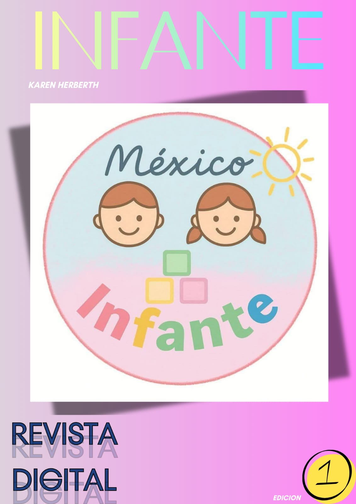
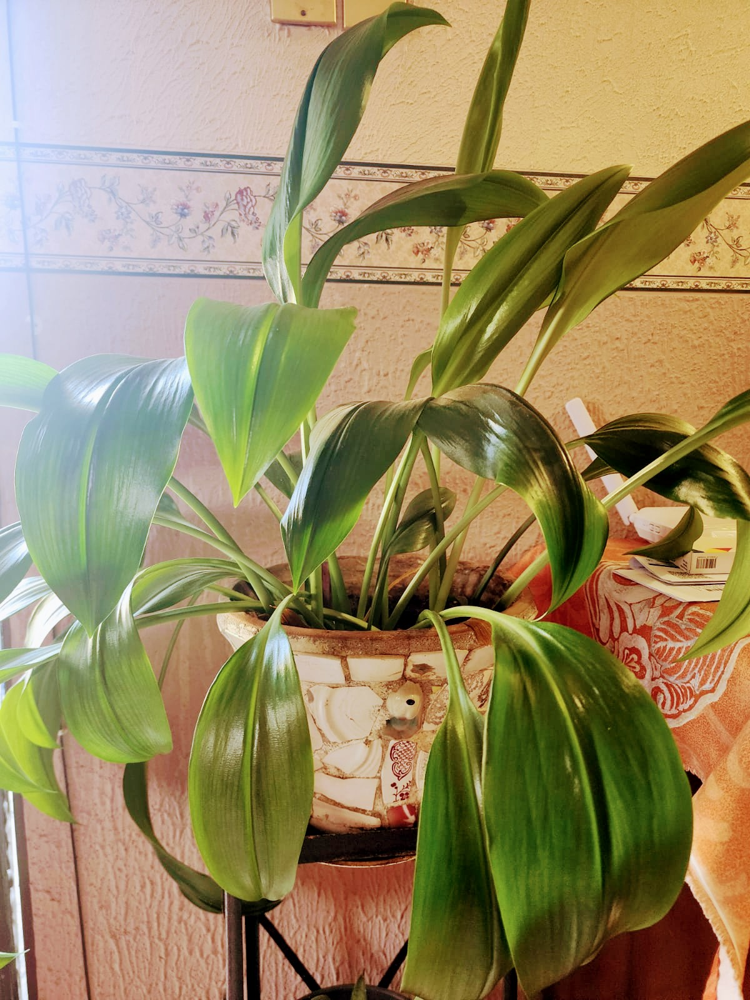
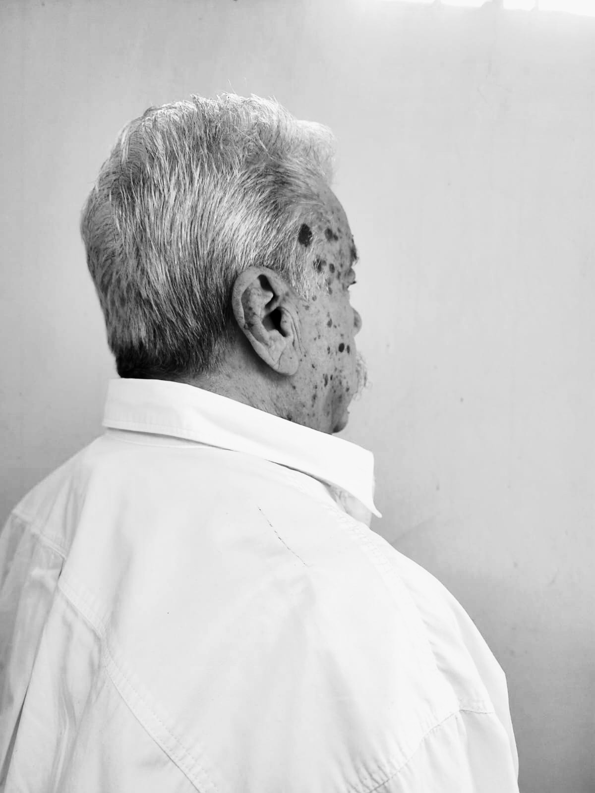
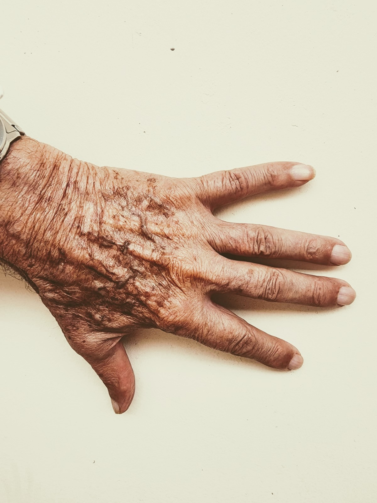
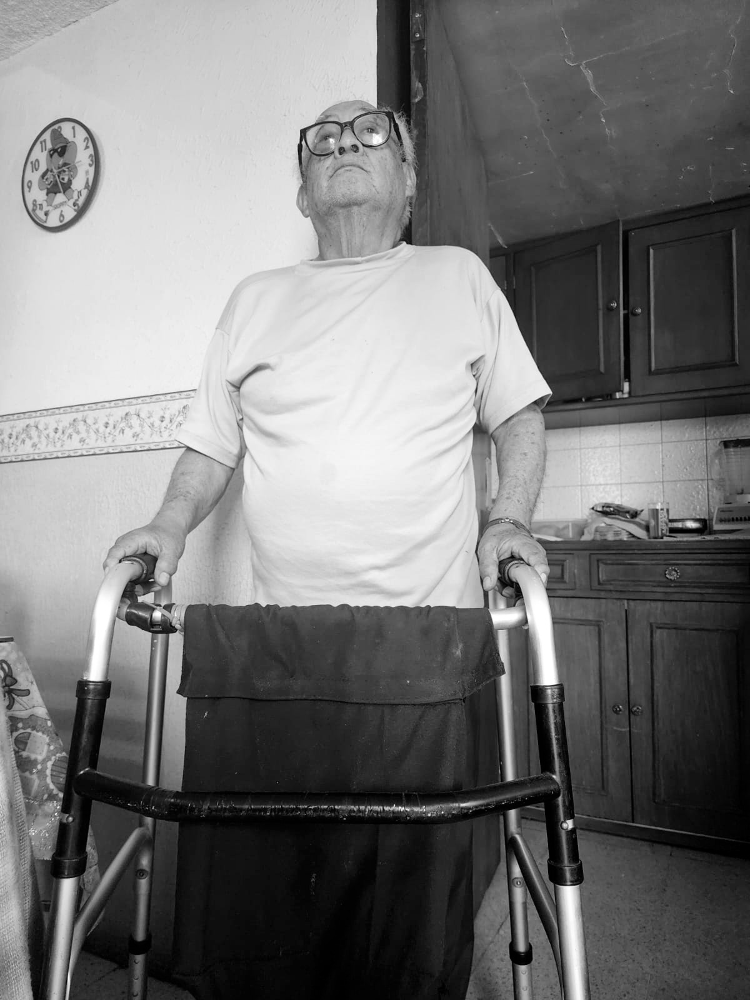
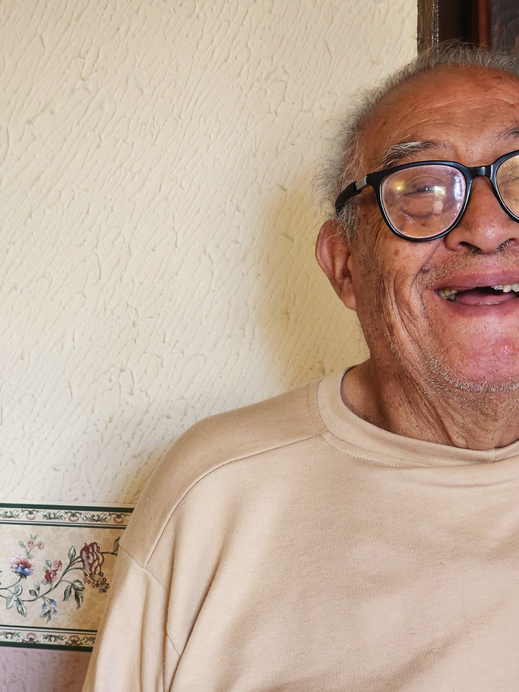

Tu guía mensual de desarrollo infantil, nutrición y bienestar familiar. Fundada por Karen Herberth, Psicóloga Educativa.





INFANTE
Crianza con ciencia y amor
Suscríbete en
infantemx.com
© INFANTE MX 2026 · Todos los derechos reservados
Recibe contenido exclusivo, acceso a la revista y descuentos en programas directamente en tu correo.
Sin spam. Puedes darte de baja cuando quieras. 🌸